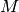
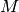

Algorithm Details¶

a) Preliminary analysis. From the sequences of the marker
genomic loci selected by the experimental design, an OTU table
and a phylogenetic tree of the representative sequences of the
OTUs is computed. b) Next, the matrix of the distances between
the samples must be computed using a phylogenetic measure of
β-diversity, such as weighted or unweighted UniFrac must be
provided.; c) The PhyloRelief strategy. Once one sample S has
been randomly selected, the nearest hit  , i.e. the
nearest sample of the same class, and the nearest miss
, i.e. the nearest sample of different class according
to distance matrix are identified. d) The update
function. For each branch the weight
is updated by summing the value and
subtracting . The function
is computed by summing the UniFrac distance
between the sample A and B restricted to the subtree
. e) Correlation of the weights and definition of the
clades. The weights of the each clades propagate to the parents,
where it is either reinforced if coalescing with a clade sharing
similar unbalance between the classes, or is diluted if
coalescing with a clade with no or contrasting unbalance. This
allows an iterative procedure leading to the the unambiguous
identification of a set of uncorrelated clades. f) Output. The
algorithm provides a list of clades of the phylogenetic tree
ranked according to their contribution to the separation of the
classes of samples.
, i.e. the
nearest sample of the same class, and the nearest miss
, i.e. the nearest sample of different class according
to distance matrix are identified. d) The update
function. For each branch the weight
is updated by summing the value and
subtracting . The function
is computed by summing the UniFrac distance
between the sample A and B restricted to the subtree
. e) Correlation of the weights and definition of the
clades. The weights of the each clades propagate to the parents,
where it is either reinforced if coalescing with a clade sharing
similar unbalance between the classes, or is diluted if
coalescing with a clade with no or contrasting unbalance. This
allows an iterative procedure leading to the the unambiguous
identification of a set of uncorrelated clades. f) Output. The
algorithm provides a list of clades of the phylogenetic tree
ranked according to their contribution to the separation of the
classes of samples.